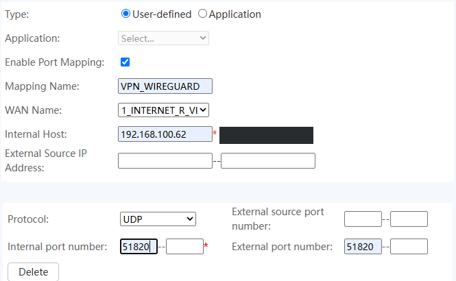

Accès distant sécurisé à un laboratoire Proxmox par VPN WireGuard : entrée par le Wi-Fi, routage par politique, DNS dynamique et accès au LAN
Sommaire
- Résumé exécutif
- Cadrage et choix de conception
- Architecture et plan d'adressage
- Mise en œuvre
- Tests et validation
- Incidents et retour d'expérience
- Sécurité et points d'attention
- Exploitation : commandes de contrôle
- Limites et risques résiduels
- Évolutions envisagées
- Contrôle de clôture
Résumé exécutif
| Contexte | Problématique | Objectif |
|---|---|---|
| Un serveur Proxmox de laboratoire est relié par câble à un PC qui n'est pas toujours allumé. Le serveur dispose aussi d'une carte Wi-Fi connectée au routeur du domicile, dont l'adresse IP publique change. | Sans VPN, le serveur n'est joignable que depuis le réseau local. Le lien filaire dépend du PC, et l'IP publique n'est pas fixe : une redirection de port classique cesse de fonctionner dès que l'adresse change. | Rendre le serveur et le réseau du domicile joignables de l'extérieur par un tunnel WireGuard, même quand le PC est éteint, avec une adresse stable grâce à un DNS dynamique. |
Chiffres vérifiables
- 1 tunnel WireGuard, 1 pair (le téléphone), 1 seul port exposé sur Internet :
UDP 51820. - 3 réseaux atteignables depuis le tunnel :
10.10.10.0/24(le VPN),192.168.100.0/24(LAN du domicile) et192.168.137.0/24(réseau de gestion, tant que le PC est allumé). - Handshake observé sur la capture : 3 paquets UDP de 148, 92 et 32 octets, puis
latest handshakede 59 secondes avec du trafic dans les deux sens. - Mise à jour DNS prévue toutes les 5 minutes par une tâche planifiée.
- 7 tests : 5 réussis, 1 écart ouvert (mise à jour DNS), 1 non réalisé (redémarrage).
Périmètre exclu : plusieurs clients, filtrage fin du trafic issu du tunnel et supervision du tunnel (voir Évolutions).
1. Cadrage et choix de conception
Besoin
Accéder à l'interface d'administration de Proxmox et au réseau du domicile depuis l'extérieur, sans ouvrir ces services directement sur Internet, et sans dépendre de l'état du PC auquel le port filaire est relié.
Choix retenus et justification
| Décision | Raison | Conséquence |
|---|---|---|
| WireGuard plutôt qu'une redirection directe de l'interface Proxmox | Un seul port UDP exposé. WireGuard ne répond pas à un paquet qui n'est pas authentifié par une clé connue : le port ne se révèle pas à un simple scan. | L'interface Proxmox (8006) reste privée et n'est atteinte qu'à travers le tunnel. |
| WireGuard installé sur l'hôte Proxmox, pas dans une VM | Le VPN reste actif tant que le serveur est allumé, sans double NAT et sans dépendre d'une machine virtuelle. Une VM sur un pont relié à une carte Wi-Fi poserait un problème : un pont ne fonctionne pas avec une interface Wi-Fi en mode client. | Aucune VM n'est nécessaire. En contrepartie, le VPN est installé sur l'hôte lui-même. |
Entrée du VPN par le Wi-Fi (wlo1) plutôt que par le port filaire | Le lien filaire passe par un PC qui n'est pas toujours allumé. | Il faut deux sorties vers Internet sur le même serveur, donc un routage par politique pour que les réponses repartent par le bon lien. |
| DNS dynamique (DuckDNS) | L'adresse IP publique du routeur n'est pas statique. | La configuration du client utilise un nom, et une tâche planifiée met l'adresse à jour. |
| NAT (masquerade) vers le LAN | Les équipements du domicile ne connaissent pas le réseau 10.10.10.0/24 et ne sauraient pas répondre au client. | Ils voient les connexions comme venant de l'hôte Proxmox (192.168.100.62). |
2. Architecture et plan d'adressage
Le téléphone se connecte en données mobiles au nom DuckDNS, qui pointe vers l'adresse publique du routeur Huawei. Le routeur redirige le port UDP 51820 vers l'interface Wi-Fi du serveur, où wg0 termine le tunnel. De là, le trafic est routé vers le LAN du domicile (par le Wi-Fi) ou vers le réseau de gestion (par vmbr0).
Plan d'adressage
| Élément | Adresse | Rôle |
|---|---|---|
| Routeur Huawei (LAN) | 192.168.100.1 | Passerelle du domicile, porte la redirection UDP 51820 |
Proxmox, wlo1 | 192.168.100.62/24 | Entrée du VPN, adresse fixe |
Proxmox, vmbr0 | 192.168.137.3/24 | Réseau de gestion, port filaire eno1 relié au PC |
Proxmox, wg0 | 10.10.10.1/24 | Serveur WireGuard, écoute sur UDP 51820 |
| Téléphone | 10.10.10.2/24 | Client, déclaré en 10.10.10.2/32 côté serveur |
Parcours d'un paquet
- Le téléphone envoie un paquet chiffré vers le nom DuckDNS, port
UDP 51820. - Le routeur traduit l'adresse de destination vers
192.168.100.62et transmet àwlo1. wg0déchiffre le paquet, dont la destination est par exemple192.168.100.1(le routeur lui-même).- Le noyau le route vers
wlo1, et la règle de NAT remplace l'adresse source10.10.10.2par192.168.100.62. - La réponse revient vers
192.168.100.62, le NAT la restitue, etwg0la chiffre vers le téléphone.
3. Mise en œuvre
3.1 Connexion de l'interface Wi-Fi
L'interface wlo1 est configurée avec une adresse fixe et le fichier wpa_supplicant de l'interface. Le mot de passe est dans un fichier lisible par root seulement (chmod 600).
ctrl_interface=/run/wpa_supplicant
update_config=1
country=BJ
network={
ssid="<SSID du routeur>"
psk="<mot de passe Wi-Fi>"
}Vérification de l'association :
$ wpa_cli -i wlo1 status | grep -E "wpa_state|ssid"
ssid=<SSID du routeur>
wpa_state=COMPLETED3.2 Routage par politique : répondre par le lien d'où vient la requête
Le serveur a deux sorties vers Internet. Sa route par défaut passe par vmbr0 (le PC). Sans règle supplémentaire, une réponse WireGuard émise depuis 192.168.100.62 partirait par ce lien au lieu de revenir par le Wi-Fi, et le tunnel ne s'établirait pas. Une table de routage dédiée (100) force les paquets émis depuis l'adresse Wi-Fi à sortir par wlo1.
ip route add 192.168.100.0/24 dev wlo1 src 192.168.100.62 table 100
ip route add default via 192.168.100.1 dev wlo1 table 100
ip rule add from 192.168.100.62 table 100Pour que ces règles survivent à un redémarrage, elles sont placées dans le bloc wlo1 de /etc/network/interfaces. La ligne gateway du bloc d'origine n'est pas conservée, afin de ne pas créer une seconde route par défaut dans la table principale. Les || true évitent qu'ifup échoue si une règle existe déjà.
iface wlo1 inet static
address 192.168.100.62/24
wpa-conf /etc/wpa_supplicant/wpa_supplicant-wlo1.conf
post-up ip route add 192.168.100.0/24 dev wlo1 src 192.168.100.62 table 100 || true
post-up ip route add default via 192.168.100.1 dev wlo1 table 100 || true
post-up ip rule add from 192.168.100.62 table 100 || true
pre-down ip rule del from 192.168.100.62 table 100 || trueContrôle de la table dédiée (sortie observée) :
$ ip route show table 100
default via 192.168.100.1 dev wlo1
192.168.100.0/24 dev wlo1 scope link src 192.168.100.623.3 Serveur WireGuard
Les paires de clés sont générées sur le serveur avec un umask 077, puis chaque clé publique est copiée dans la configuration de l'autre extrémité. Une clé privée n'est jamais copiée dans la configuration du pair.
apt install wireguard -y
cd /etc/wireguard && umask 077
wg genkey | tee server.key | wg pubkey > server.pub
wg genkey | tee client.key | wg pubkey > client.pubFichier /etc/wireguard/wg0.conf (clés remplacées par des repères). Le PostUp active le routage entre interfaces et pose deux règles de NAT, une vers le LAN du domicile (wlo1) et une vers le réseau de gestion (vmbr0) :
[Interface]
Address = 10.10.10.1/24
ListenPort = 51820
PrivateKey = <clé privée du serveur>
PostUp = sysctl -w net.ipv4.ip_forward=1; iptables -t nat -A POSTROUTING -s 10.10.10.0/24 -o vmbr0 -j MASQUERADE; iptables -t nat -A POSTROUTING -s 10.10.10.0/24 -o wlo1 -j MASQUERADE
PostDown = iptables -t nat -D POSTROUTING -s 10.10.10.0/24 -o vmbr0 -j MASQUERADE; iptables -t nat -D POSTROUTING -s 10.10.10.0/24 -o wlo1 -j MASQUERADE
[Peer]
PublicKey = <clé publique du téléphone>
AllowedIPs = 10.10.10.2/32Activation au démarrage et contrôle :
systemctl enable --now wg-quick@wg0
wg show3.4 Redirection de port sur le routeur
Une règle de redirection envoie le port UDP 51820 du routeur vers 192.168.100.62. Le routeur n'a pas de champ « protocole » dans le premier formulaire : il apparaît dans un second bloc, qui doit être réglé sur UDP, avec les deux cases de chaque plage de ports renseignées (51820 à 51820). L'adresse physique de l'hôte, visible sur la capture d'origine, est masquée.

UDP 51820 vers l'hôte Proxmox. Capture prise pendant la saisie, avant la validation par « Add » et « Apply » ; la seconde case de chaque plage a été complétée ensuite.Avant de configurer cette redirection, j'ai vérifié que le routeur n'est pas derrière un CGNAT : l'adresse WAN affichée par le routeur est identique à celle qu'un service externe me renvoie. Si elles avaient différé, aucune redirection de port n'aurait fonctionné depuis l'extérieur.
3.5 DNS dynamique (DuckDNS)
Un script appelle l'API de DuckDNS toutes les 5 minutes. L'option --interface wlo1 force la requête à sortir par le Wi-Fi : l'adresse enregistrée est ainsi celle du routeur où la redirection de port est configurée. Le script est en chmod 700, car le jeton permet de modifier l'adresse du domaine.
#!/bin/bash
curl -s --interface wlo1 "https://www.duckdns.org/update?domains=<sous-domaine>&token=<jeton>&ip=" -o /opt/duckdns/duck.log# crontab -l
*/5 * * * * /opt/duckdns/duck.sh >/dev/null 2>&13.6 Client (téléphone)
Le client est configuré dans l'application WireGuard du téléphone. Son fichier de configuration contient la clé privée du téléphone : il ne doit être conservé ni sur le serveur, ni dans un dépôt. Les trois réseaux sont déclarés dans AllowedIPs, ce qui n'envoie dans le tunnel que le trafic destiné à ces réseaux, pas tout le trafic du téléphone. L'Endpoint désigne le nom DuckDNS, ou l'adresse publique pendant les premiers essais.
[Interface]
Address = 10.10.10.2/24
PrivateKey = <clé privée du téléphone>
[Peer]
PublicKey = <clé publique du serveur>
Endpoint = <sous-domaine>.duckdns.org:51820
AllowedIPs = 10.10.10.0/24, 192.168.100.0/24, 192.168.137.0/24
PersistentKeepalive = 254. Tests et validation
Les tests sont menés depuis le téléphone en données mobiles (jamais depuis le Wi-Fi du domicile, qui ne prouve rien sur l'accès extérieur) et depuis le serveur. Verdicts possibles : Réussi, Écart ouvert, Non réalisé.
Test 1 — Association Wi-Fi de wlo1
- Procédure :
wpa_cli -i wlo1 status, puisping -I wlo1 192.168.100.1. - Attendu :
wpa_state=COMPLETEDet réponses du routeur. - Observé : association établie après nettoyage des instances en double (voir INC-001) ; le routeur répond en 5 à 8 ms. Verdict : Réussi.
Test 2 — Sortie vers Internet par le Wi-Fi
- Procédure :
curl -4 --interface wlo1 https://api.ipify.orgaprès la mise en place de la table de routage dédiée. - Attendu : l'adresse publique du routeur.
- Observé : une adresse publique est renvoyée ; avant la règle de routage, la même commande échouait (voir INC-002). Le
pingvers8.8.8.8reste sans réponse alors que les connexions TCP aboutissent ; je n'ai pas isolé la cause (filtrage ICMP probable, non confirmé). Verdict : Réussi.
Test 3 — Absence de CGNAT
- Procédure : comparer l'adresse WAN affichée dans l'interface du routeur avec l'adresse vue depuis Internet.
- Attendu : adresses identiques, hors plages privées et hors
100.64.0.0/10. - Observé : adresses identiques ; la redirection de port peut fonctionner. Verdict : Réussi.
Test 4 — Établissement du tunnel depuis les données mobiles
- Procédure :
tcpdump -ni wlo1 udp port 51820pendant l'activation du tunnel sur le téléphone, puiswg show. - Attendu : un échange de handshake sur
wlo1, puis unlatest handshakerécent côté serveur. - Observé : trois paquets : 148 octets du téléphone vers le serveur (initiation), 92 octets en réponse, 32 octets du téléphone (premier keepalive). Puis un handshake de 59 secondes avec du trafic dans les deux sens. Verdict : Réussi.
01:59:01.260922 IP <IP mobile>.34661 > 192.168.100.62.51820: UDP, length 148
01:59:01.261299 IP 192.168.100.62.51820 > <IP mobile>.34661: UDP, length 92
01:59:01.465851 IP <IP mobile>.34661 > 192.168.100.62.51820: UDP, length 32interface: wg0
public key: <clé publique du serveur>
listening port: 51820
peer: <clé publique du téléphone>
endpoint: <IP mobile>:<port>
allowed ips: 10.10.10.2/32
latest handshake: 59 seconds ago
transfer: 83.34 KiB received, 441.58 KiB sentTest 5 — Accès au LAN du domicile à travers le tunnel
- Procédure : depuis le téléphone, tunnel actif en données mobiles, ouvrir la page du routeur (
192.168.100.1), après ajout du NAT surwlo1et de192.168.100.0/24dansAllowedIPs. - Attendu : la page du routeur répond ; sur le serveur, les paquets sortent par
wlo1avec la source192.168.100.62. - Observé : accès au LAN confirmé depuis le téléphone. Pas de capture dédiée de ce test. Verdict : Réussi.
Test 6 — DNS dynamique
- Procédure :
nslookupdu sous-domaine, lecture de/opt/duckdns/duck.loget decrontab -l. - Attendu : résolution vers l'adresse publique, journal à
OK, une seule ligne planifiée. - Observé : la résolution renvoie la bonne adresse et la tâche planifiée est unique, mais le journal affiche
KO: le script contenait un point en trop après le nom du sous-domaine (voir INC-005). La correction est identifiée ; le passage àOKreste à constater. Verdict : Écart ouvert.
Test 7 — Redémarrage du serveur
- Procédure : redémarrer, puis contrôler
pgrep -a wpa_supplicant,wpa_cli -i wlo1 status,ip rule,wg show, et reconnecter le téléphone sans intervention. - Attendu : une seule instance
wpa_supplicant, Wi-Fi associé, une règle de routage,wg0en écoute, tunnel rétabli. - Observé : test pas encore exécuté. Verdict : Non réalisé.
Synthèse
| # | Test | Verdict | Preuve |
|---|---|---|---|
| 1 | Association Wi-Fi de wlo1 | Réussi | Sortie de wpa_cli |
| 2 | Sortie Internet par le Wi-Fi | Réussi | Sortie de curl |
| 3 | Absence de CGNAT | Réussi | Comparaison des adresses WAN |
| 4 | Tunnel depuis les données mobiles | Réussi | Capture tcpdump et wg show |
| 5 | Accès au LAN par le tunnel | Réussi | Pas de capture dédiée |
| 6 | DNS dynamique | Écart ouvert | Journal KO à rejouer |
| 7 | Redémarrage complet | Non réalisé | À faire |
5. Incidents et retour d'expérience
INC-001 — Interface Wi-Fi inactive et plusieurs instances de wpa_supplicant
- Symptôme :
wlo1à l'étatDOWNmalgré son adresse, etwpa_clisans interface de contrôle. Après un lancement manuel,wpa_state=DISCONNECTEDet des dizaines de messages « Match already configured ». - Cause : trois processus
wpa_supplicant(celui du système et deux lancés à la main) se disputaient l'interface, constaté avecpgrep -a wpa_supplicant. - Correction : arrêt de tous les processus avec
killall wpa_supplicant, puis un seul lancement. L'association passe àCOMPLETED. - Enseignement : lister les processus avant de relancer un démon, plutôt que d'en ajouter un de plus.
INC-002 — Aucune requête ne sort par wlo1
- Symptôme :
curl --interface wlo1échoue en 4 à 15 ms, etping -I wlo1répond « Network is unreachable », alors que le routeur répond en local. - Cause : la seule route par défaut passe par
vmbr0; aucune route n'existe viawlo1. Un échec aussi rapide indique un problème local, pas un blocage distant. - Correction : table de routage
100et règleip rule add from 192.168.100.62 table 100.curlrenvoie ensuite l'adresse publique. - Enseignement : avec deux sorties, une réponse doit repartir par l'interface d'où est venue la requête ; c'est exactement le besoin de WireGuard côté Wi-Fi.
INC-003 — ifup wlo1 échoue sur le script wpasupplicant
- Symptôme :
ifups'arrête avec « pre-up cmd /etc/network/if-pre-up.d/wpasupplicant failed: returned 1 », etwpa_state=INTERFACE_DISABLED. - Cause : une instance lancée à la main occupait déjà l'interface, donc celle que le script d'
ifupvoulait démarrer ne pouvait pas démarrer. - Correction : arrêt de toutes les instances, suppression des fichiers de contrôle résiduels, désactivation du service
wpa_supplicantdu système, puisifup wlo1comme seul gestionnaire du Wi-Fi. Une seule instance est alors présente (avec le fichier de PID d'ifup), l'association estCOMPLETEDet la table100est remplie. - Observation : la règle
from 192.168.100.62 lookup 100apparaissait en double (ajout manuel, puispost-up). Sans conséquence, supprimée avecip rule del. - Enseignement : un seul acteur gère l'interface. Mélanger lancement manuel et configuration persistante crée des conflits qui reviennent au redémarrage.
INC-004 — Aucun handshake après le redémarrage de wg0
- Symptôme : après
systemctl restart wg-quick@wg0(ajout du NAT verswlo1),wg shown'affiche niendpoint, nihandshake, ni trafic, ettcpdump -ni wg0reste vide. - Piste suivie : le tunnel côté téléphone n'était pas réactivé ; un test depuis le Wi-Fi du domicile peut aussi échouer (certains routeurs ne gèrent pas ce retour). La cause exacte n'a pas été confirmée.
- Résolution : tunnel réactivé sur le téléphone en données mobiles ; le handshake apparaît.
- Observation liée : une capture
tcpdump -ni wlo1 icmpne montrait que les pings du routeur vers le serveur (surveillance de routine), qui masquaient le test. Il faut filtrer par adresse source pour isoler le trafic recherché. - Statut : résolu, cause racine non confirmée.
INC-005 — La mise à jour DuckDNS répond KO
- Symptôme :
/opt/duckdns/duck.logcontientKO, alors que la résolution DNS renvoie la bonne adresse (enregistrée plus tôt). - Cause : le paramètre
domains=du script se terminait par un point (nom.), que DuckDNS ne reconnaît pas. Le nom doit être donné sans point et sans.duckdns.org. - Risque : sans mise à jour réussie, le jour où l'adresse publique change, le nom pointe vers l'ancienne adresse et le VPN cesse de fonctionner sans avertissement.
- Correction : retrait du point dans le script avec
sed. Le passage du journal àOKreste à constater. - Statut : correction identifiée, à valider.
6. Sécurité et points d'attention
| Sujet | État | Détail |
|---|---|---|
| Surface exposée | Appliqué | Un seul port UDP ouvert. WireGuard ignore les paquets qui ne portent pas une clé connue. |
| Clés privées | Appliqué | Générées avec umask 077 dans /etc/wireguard. Seules les clés publiques sont copiées dans la configuration de l'autre extrémité. |
| Jeton DuckDNS et mot de passe Wi-Fi | Appliqué | Stockés dans des fichiers réservés à root (chmod 700 et chmod 600). Le jeton permet de rediriger le domaine : il ne doit figurer dans aucun dépôt ni capture. |
| Filtrage du trafic issu du tunnel | Non configuré | Le client peut atteindre tout ce qui est routable depuis le serveur. À durcir par des règles de pare-feu limitées aux services utiles. |
| Traçabilité par client | Limitée | À cause du NAT, les équipements du domicile voient 192.168.100.62, pas l'adresse du client VPN. |
| Client sur le Wi-Fi du domicile | Point d'attention | La route 192.168.100.0/24 du tunnel entre en conflit avec le réseau local réel : le tunnel doit être désactivé quand le téléphone est déjà à la maison. |
7. Exploitation : commandes de contrôle
| Cible | Commande | Ce qu'elle vérifie |
|---|---|---|
| Wi-Fi | wpa_cli -i wlo1 status | grep -E "wpa_state|ssid" | Association au routeur (COMPLETED) |
| Wi-Fi | pgrep -a wpa_supplicant | Une seule instance en cours |
| Routage | ip rule et ip route show table 100 | Règle de politique et route par défaut via wlo1 |
| Routage | ip route get 8.8.8.8 from 192.168.100.62 | Le chemin choisi est bien dev wlo1 |
| WireGuard | wg show | Pair, latest handshake et compteurs de trafic |
| WireGuard | systemctl is-active wg-quick@wg0 et systemctl is-enabled wg-quick@wg0 | Service actif et lancé au démarrage |
| Routage | sysctl net.ipv4.ip_forward | Retransmission activée (1) |
| NAT | iptables -t nat -L POSTROUTING -n -v | Deux règles MASQUERADE (vmbr0 et wlo1) et leurs compteurs |
| Diagnostic | tcpdump -ni wlo1 udp port 51820 | Arrivée des paquets WireGuard sur le Wi-Fi |
| Diagnostic | tcpdump -ni wlo1 'src 192.168.100.62 and dst 192.168.100.1' | Trafic NAT vers le LAN, sans le bruit du routeur |
| DNS dynamique | cat /opt/duckdns/duck.log et nslookup <sous-domaine>.duckdns.org | Dernière réponse de DuckDNS (OK) et adresse résolue |
Les commandes sont celles des versions courantes de Debian et de Proxmox VE ; adapter à la version installée.
8. Limites et risques résiduels
- Un seul lien Wi-Fi sans redondance, et un seul serveur : si l'un tombe, le VPN tombe.
- Le réseau de gestion
192.168.137.0/24n'est atteignable que si le PC auquelvmbr0est relié est allumé ; seules10.10.10.1et le LAN du domicile sont joignables en permanence. - La mise à jour de l'adresse publique n'est pas encore validée : un changement d'adresse coupe le VPN tant que le journal DuckDNS n'affiche pas
OK. - Persistance au redémarrage non prouvée (test 7) : le conflit entre instances de
wpa_supplicantpourrait réapparaître. - Aucun filtrage spécifique sur le trafic du tunnel.
- Un seul client, aucune rotation de clés documentée.
- Débit et latence du tunnel non mesurés ; le Wi-Fi 2.4 GHz est le facteur limitant probable.
9. Évolutions envisagées
- Valider la persistance : constater
OKdans le journal DuckDNS, puis redémarrer le serveur et rejouer les contrôles du test 7. - Atteindre les machines virtuelles sans dépendre du PC : les placer sur un pont interne sans port physique, relié par routage, au lieu de
vmbr0. - Durcir le trafic issu du tunnel : n'autoriser que les services utiles (interface Proxmox, SSH, éventuellement quelques hôtes du LAN) par des règles de pare-feu sur
wg0.
10. Contrôle de clôture
- Tests réussis : 5 / 7
- Tests échoués : 0
- Écart ouvert : 1 (mise à jour DuckDNS, correction à valider)
- Test non réalisé : 1 (redémarrage complet)
- Preuves : captures de terminal anonymisées (
tcpdump,wg show,ip route,wpa_cli) et capture du formulaire de redirection ; le test 5 n'a pas de capture dédiée. - Panne contrôlée testée : Non
- Limites et risques résiduels documentés : Oui
- Décision : Fonctionnel, à consolider
- Prochaine action concrète : constater le journal DuckDNS à
OK, puis redémarrer le serveur et valider le retour automatique du tunnel
Règle de statut : « Fonctionnel » décrit ce qui a été observé en test. Il ne couvre ni la persistance après redémarrage, ni le changement d'adresse publique, qui restent des actions ouvertes.
Projet associé
Le même protocole de raisonnement s'applique à un autre type d'interconnexion : la fiche Interconnexion de deux sites par VPN IPsec IKEv2 relie deux réseaux d'entreprise entre pare-feu FortiGate, là où cette fiche donne à un seul utilisateur un accès distant à un laboratoire.
Pilotage du projet — pratiques de gestion inspirées d'ITIL 4
Périmètre de ce bilan : les éléments cochés correspondent aux réalisations visibles dans la fiche et aux preuves associées. Il s'agit d'une démarche de laboratoire inspirée d'ITIL 4, et non d'une certification ITIL ni de la preuve d'un processus ITSM formel.
1. Cadrage et définition du service
- ☑ Le besoin d'accès distant sécurisé et ses contraintes (PC non permanent, adresse IP publique variable) sont décrits.
- ☑ Les choix de conception (hôte plutôt que VM, entrée par le Wi-Fi, DNS dynamique, NAT) sont justifiés dans un tableau.
- ☑ Le périmètre exclu (plusieurs clients, filtrage fin, supervision) est indiqué.
2. Conception et gestion de la configuration
- ☑ L'architecture et le plan d'adressage sont documentés, avec le parcours d'un paquet.
- ☑ Les configurations utiles (Wi-Fi, routage, WireGuard, DNS dynamique, client) sont reproduites avec des valeurs sensibles remplacées.
- ☑ Le routage est rendu persistant dans la configuration réseau du serveur.
3. Mise en œuvre technique
- ☑ Interface Wi-Fi associée, routage par politique en place, tunnel WireGuard actif.
- ☑ Redirection de port UDP 51820 configurée, absence de CGNAT vérifiée au préalable.
- ☑ NAT vers le LAN du domicile et vers le réseau de gestion configuré.
- ☑ Client mobile configuré avec les trois réseaux dans
AllowedIPs.
4. Validation et mise en service
- ☑ Handshake observé en capture depuis les données mobiles.
- ☑ Accès au LAN du domicile confirmé à travers le tunnel.
- ☑ Cinq tests sur sept réussis ; l'écart et le test restant sont nommés.
5. Documentation et amélioration
- ☑ Cinq incidents sont documentés avec symptôme, cause, correction et enseignement.
- ☑ Les commandes de contrôle sont regroupées dans un tableau d'exploitation.
- ☑ Les limites et les évolutions envisagées sont séparées des réalisations.
6. Limites et actions non démontrées par les preuves actuelles
- Le retour automatique du tunnel après redémarrage du serveur n'est pas démontré.
- La mise à jour automatique de l'adresse publique n'est pas démontrée tant que le journal DuckDNS n'affiche pas
OK. - Aucun scénario de panne (perte du lien Wi-Fi, changement d'adresse publique) n'est testé.
- Aucune mesure de débit ou de latence, aucun filtrage du trafic issu du tunnel, aucune supervision du tunnel.
- Aucune procédure formelle de changement, de retour arrière ou de rotation des clés n'est fournie.
7. Bilan de clôture
- Statut : fonctionnel pour le périmètre testé : accès distant au serveur et au LAN du domicile depuis un téléphone en données mobiles.
- Preuves principales : capture du handshake, sortie de
wg show, tables de routage, formulaire de redirection de port. - Réserve : le statut Fonctionnel ne signifie ni que le tunnel survit à un redémarrage, ni qu'il survit à un changement d'adresse publique.
- Référentiel : pratiques de documentation, configuration, validation et amélioration inspirées d'ITIL 4 ; aucune conformité formelle n'est revendiquée.